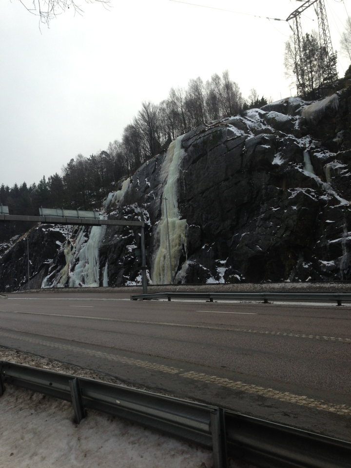
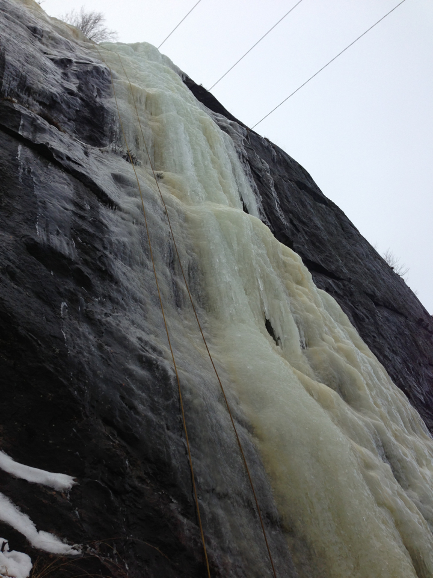
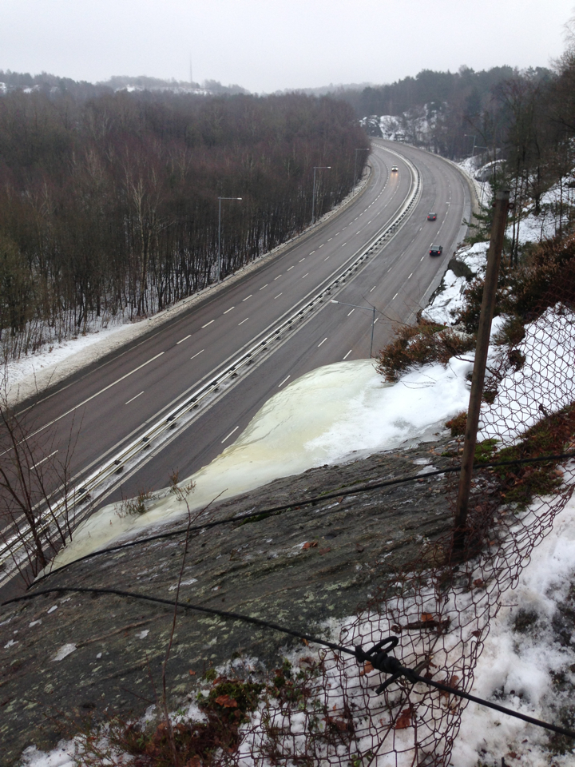
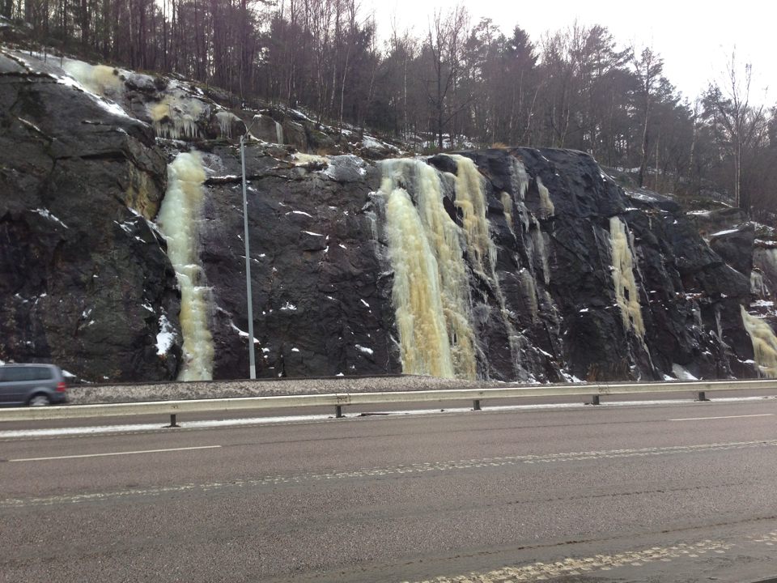

GPS: 57.79375,12.0287
Kategori:Göteborg
Kategori:Is
Ett antal isfall pryder sprängväggarna intill väg 159, i backen upp ifrån väg 40 mot Angered. Inte världens mysigaste miljö, men man står i alla fall skyddad av betongsuggor. Parkera med förstånd i närområdet, självklart inte på motorvägen, duh...
Se upp för frånvarande brunnslock under snön när du går i diket under väggen
.
Ett flertal långa och snudd på vertikala leder. Sällan ledbart men inte ovanligt med topprepsmöjligheter. Lättaste vägen upp görs via en krypramp i högerkant.
Det finns vissa accessproblem i Agnesberg. Parkera skall man göra nere vid Steken, finns oftast gott om platser där. Alternativt uppe i Hammarkullen och gå ned. Se till att inte röra er på vägen och stanna (eller parkera) ALDRIG bilen längs med Angeredsleden. Polisen brukar få flera samtal varje år från irriterade/oroade bilister.
4-5 leder, de flesta ganska branta . En svaig variant i diedret en bit till höger.
Lite bilder så att eventuella spekulanter förstår hur naturskön klippan är.
   Copyright (C) Permission is granted to copy, distribute and/or modify this document under the terms of the GNU Free Documentation License, Version 1.3